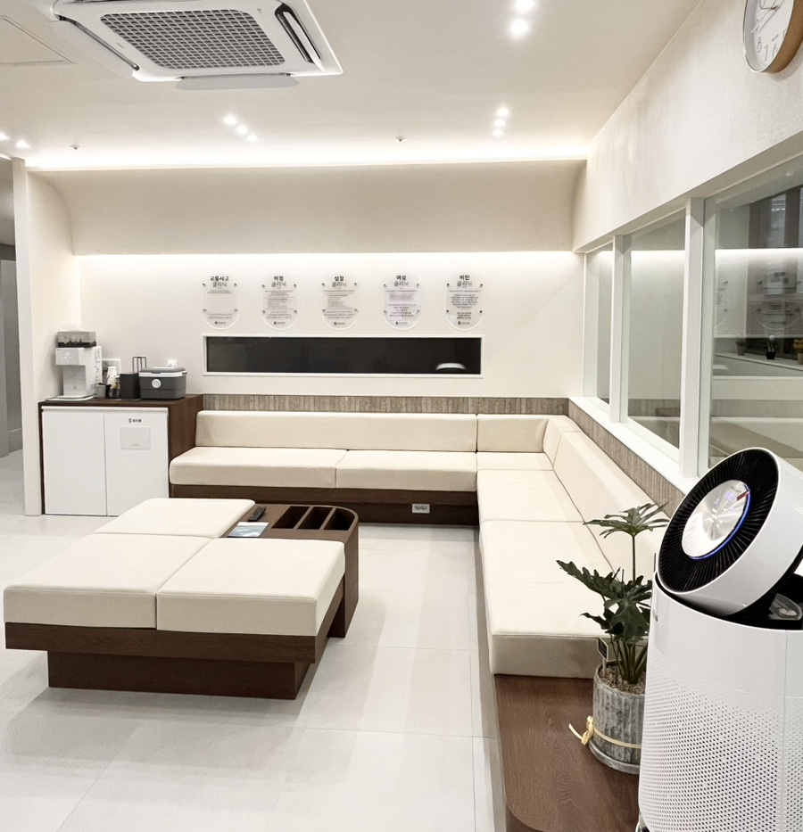
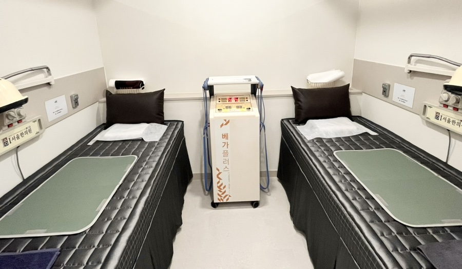

접수/상담 공간
처음 오시는 분도 편안하게 상담받을 수 있는 안내 동선을 운영합니다.
내원 전 분위기를 편하게 확인하실 수 있도록 진료 장면과 공간 이미지를 구성했습니다.
처음 오시는 분도 편안하게 상담받을 수 있는 안내 동선을 운영합니다.

진료 전후로 긴장을 낮출 수 있도록 차분한 대기 공간을 유지합니다.

증상과 체질을 확인한 뒤 개인별 치료 계획에 맞춰 진료를 진행합니다.

성장·비염·통증 등 증상에 맞는 치료가 가능하도록 분리된 공간으로 운영합니다.

교통사고 후유증과 만성 통증은 회복 단계에 맞춰 세밀하게 안내합니다.
진료 시간, 위치, 대중교통 정보를 내원 전 바로 확인하실 수 있도록 정리했습니다.

아이(I)서울한의원 은 성장·학습·비염, 체질·여성, 피부·비만·탈모, 통증·교통사고 진료를 큰 흐름으로 나누어 안내합니다.
월·금 09:00 - 18:30
화·목 09:00 - 20:00 야간진료
수요일 09:00 - 13:00 오전진료
토요일 09:00 - 16:00
점심시간 평일 13:00 - 14:00
일요일 휴진
공휴일은 휴진 또는 선택 진료로 운영될 수 있어 내원 전 전화 문의를 권장드립니다.
주소
대구광역시 수성구 교학로 13, 만촌3차 화성파크드림 상가동 201호
지하철 2호선 담티역 2번 출구에서 약 250m 거리에 있습니다.
버스 309, 349, 509, 609, 840, 937, 990번은 담티역 하차 후 농협 맞은편 길을 따라 이동하시면 됩니다. 234, 425번은 만촌3차화성파크드림 건너에서 하차 후 길 건너편입니다.